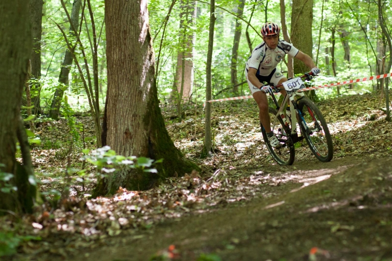

← Sve aktivnostiAktivnosti
Biciklizam
Samobor je poznat i po biciklističkim stazama koje su organizirane i označene brojevima od 1 do 4. Samoborsko gorje odlična je lokacija za brdski biciklizam, a pri povratku možete stati i odmoriti uz kavu i kremšnite. Jedne od njapoznatiih staza su: Vilinska staza (Grdanjci - Medven Draga), staza slapova (Medven Draga - Grdanjci), staza šišmiša (Samobor - Koretići - Samobor) i staza svete Gere (Stari grad Ozalj - Sošice). Uzmite svoj bike i provozajte se sa nama.